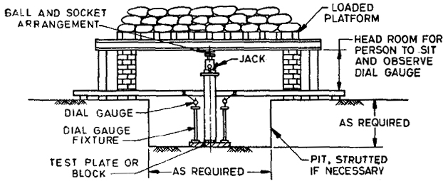

In this module, The structural strength of soil is basically a problem of shear strength. Vane shear test is a useful method of measuring the shear strength of clay. It is a cheaper and quicker method. The test can also be conducted in the laboratory. The laboratory vane shear test for the measurement of shear strength of cohesive soils, is useful for soils of low shear strength (less than 0.3 kg/cm2) for which triaxial or unconfined tests cannot be performed. The test gives the undrained strength of the soil. The undisturbed and remoulded strength obtained are useful for evaluating the sensitivity of soil.
Read More...

The load is applied to the plate in increments of one fifth of the design load. The next increment is not applied until the settlement rate has reduced to 0.1 inch/min for a period of 60 mins. The increments are applied until shear failure or until the loading is 2 to 3 times the design load.
Settlement is fastest in the first few minutes after each new load increment, thus settlement readings are recorded on a 'integer square' basis, i.e. 1,4,9,16,25 min intervals. This enables the collection of more data in the early stages of each load increment.
Typically, time-settlement and load-settlement curves are then produced.
In this case the load is applied such that the rate of penetration remains constant. A load-settlement curve is produced. Equations have been developed to obtain untrained shear strength from ultimate bearing capacity, thickness of soil above test strata and a bearing capacity factor that depends on the shape of the loaded area. If bearing capacity failure is not apparent from the load-settlement curve, it is assumed to be the load at which settlement equals 15% of plate diameter.
The location for the test should carefully be chosen, keeping in view the type of strata below the foundation. The test , unless the circumstances dictate otherwise, should be conducted at the proposed foundation level under the worst possible conditions. If the ground water table exists within a depth equal to the twice of width of the test plate, the test should be perform at the level of the water table. Where the ground water is above the test level, the water table should be lowered up to the test level by continuous dewatering through pump, keeping in view that the test level is not disturbed.
The size of the plate should be at least four times the maximum size of the particles, available at that level. For circular footing and road problems, circular should be used while for all types of structures square plate must be adopted .
The size of plate generally used in practice is 30 cm, 45 cm, 60 cm or 100 cm depending up on the size of foundation.
Planning and organization equipment
- Plate Load Test apparatus.
- Bearing plates.
- Dial Gauge.
- Magnetic base.
- Datum bar

To determine the allowable bearing capacity of a soil .


- Test Arrangments: Foundation Pit shall be excavated up to a level of a foundation of building or other structure, to be constructed.
Test plate of given size shall be placed on the prepared sub-base with provisions of 02 dial gauges to note the settlements with least accuracy count of 0.01 mm.
Bearing plate is placed on the test plate over which hydraulic jack is located.
Another bearing plate is placed over hydraulic jack which act as load transferring media.
Further, the system is loaded with point load pattern so that the net load in punching is applied on to the plate without any eccentricity. Point load can be a loaded excavator or loaded lorry or Kent ledge system,.etc. - Loading Criterion: oad is increased in increments of 25% of the ultimate load carrying until it reaches the ultimate load intensity ( ultimate load intensity is either given or assumed) or the total settlement of the plate is 25 mm or the soil under the plate fails whichever occurs earlier.
Settlements of the plate is recorded by dial gauges of minimum accuracy of 0.01 mm fixed at diametrically opposite ends. - Unloading to check Rebound: Entire load is removed quickly but gradually and the plate is allowed to rebound when no further rebound occurs or the rate of rebound becomes negligible the reading of the dial gauges are again noted.